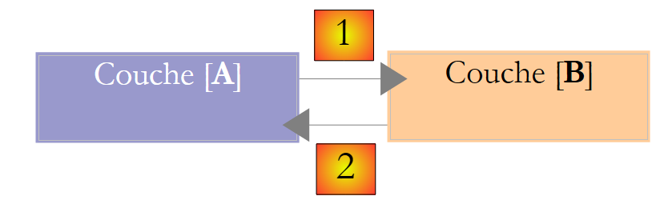
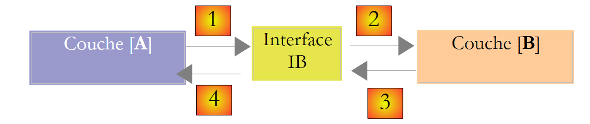
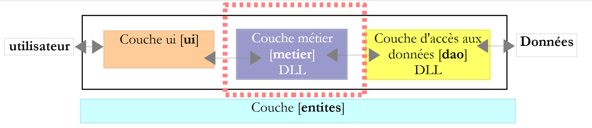
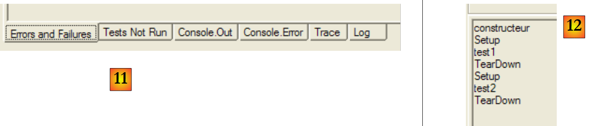
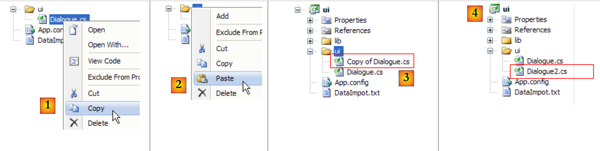
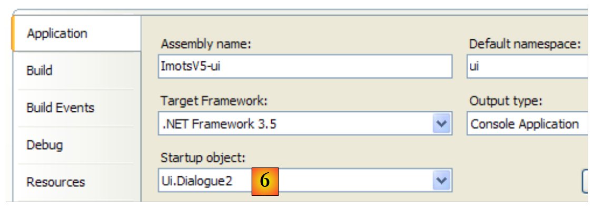

6. Arquiteturas de 3 camadas
6.1. Introdução
Vamos dar uma vista de olhos à versão mais recente da aplicação de cálculo de impostos:
using System;
namespace Chap3 {
class Program {
static void Main() {
// interactive tax calculator
// the user enters three data points on the keyboard: married nbEnfants salary
// the program then displays Tax payable
...
// creation of a IImpot object
IImpot impot = null;
try {
// creation of a IImpot object
impot = new FileImpot("DataImpotInvalide.txt");
} catch (FileImpotException e) {
// error display
...
// program stop
Environment.Exit(1);
}
// infinite loop
while (true) {
// tax calculation parameters are requested
Console.Write("Paramètres du calcul de l'Impot au format : Marié (o/n) NbEnfants Salaire ou rien pour arrêter :");
string paramètres = Console.ReadLine().Trim();
...
// parameters are correct - Impot is calculated
Console.WriteLine("Impot=" + impot.calculer(marié == "o", nbEnfants, salaire) + " euros");
// next taxpayer
}//while
}
}
}
A solução anterior inclui o clássico :
- recuperar dados armazenados em ficheiros, bases de dados, etc. linhas 12-21
- diálogo com o utilizador, linhas 26 (entradas) e 29 (exibições)
- a utilização de um algoritmo empresarial, linha 29
A experiência prática demonstrou que isolar estes diferentes processos em classes separadas melhora a facilidade de manutenção das aplicações. A arquitetura de uma aplicação estruturada desta forma é a seguinte:
 |
Esta arquitetura é denominada «arquitetura de três camadas». O termo «três camadas» refere-se normalmente a uma arquitetura em que cada camada se encontra numa máquina diferente. Quando as camadas se encontram na mesma máquina, a arquitetura passa a ser uma «arquitetura de três camadas».
- A camada [de negócios] contém as regras de negócio da aplicação. No caso da nossa aplicação de cálculo de impostos, estas são as regras utilizadas para calcular o imposto de um contribuinte. Esta camada necessita de dados para funcionar:
- faixas de imposto, que mudam todos os anos
- número de filhos, estado civil e salário anual do contribuinte
No diagrama acima, os dados podem provir de dois locais:
- a camada de acesso aos dados ou [dao] (DAO = Data Access Object) para dados já armazenados em ficheiros ou bases de dados. Este pode ser o caso das faixas de imposto, tal como foi feito na versão anterior da aplicação.
- a camada de interface do utilizador ou [ui] (UI = Interface do Utilizador) para dados introduzidos pelo utilizador ou apresentados ao utilizador. Este poderia ser o caso aqui para o número de filhos, estado civil e salário anual do contribuinte
- em geral, a camada [dao] lida com o acesso a dados persistentes (ficheiros, bases de dados) ou não persistentes (rede, sensores, etc.).
- A camada [ui] lida com as interações com o utilizador, se houver.
- as três camadas são tornadas independentes através da utilização de interfaces.
Vamos pegar na aplicação [Impots] que já estudámos várias vezes e dar-lhe uma arquitetura de 3 camadas. Para tal, iremos estudar as camadas [ui, metier, dao] uma a seguir à outra, começando pela camada [dao], que lida com dados persistentes.
Primeiro, precisamos de definir as interfaces das várias camadas da aplicação [Impots].
6.2. Interfaces da aplicação [Impots]
Lembre-se de que uma interface define um conjunto de assinaturas de métodos. As classes que implementam a interface dão conteúdo a esses métodos.
Voltemos à arquitetura de três camadas da nossa aplicação:
 |
Neste tipo de arquitetura, é frequentemente o utilizador que toma a iniciativa. Ele faz um pedido em [1] e recebe uma resposta em [8]. Isto é conhecido como o ciclo pedido-resposta. Tomemos o exemplo do cálculo do imposto de um contribuinte. Isto exigirá várias etapas:
- a camada [ui] terá de perguntar ao utilizador o número de filhos, o estado civil e o salário anual. Esta é a operação [1] acima.
- assim que isso estiver feito, a camada [ui] solicitará à camada de negócio que calcule o imposto. Para tal, transmitirá os dados que recebeu do utilizador. Esta é a operação [2].
- A camada [metier] necessita de determinadas informações para realizar o seu trabalho: escalões de imposto. Solicitará estas informações à camada [dao] através do caminho [3, 4, 5, 6]. [3] é o pedido inicial e [6] a resposta a este pedido.
- Com todos os dados de que necessita, a camada [metier] calcula o imposto.
- A camada [metier] pode agora responder ao pedido feito pela camada [ui] em (b). Este é o caminho [7].
- A camada [ui] irá formatar estes resultados e apresentá-los ao utilizador. Este é o caminho [8].
- Podemos imaginar que o utilizador realiza simulações de impostos e deseja guardá-las. Para tal, utilizaria o caminho [1-8].
Esta descrição mostra que uma camada utilizará os recursos da camada à sua direita, mas nunca da camada à sua esquerda. Considere duas camadas contíguas:
 |
A camada [A] faz pedidos à camada [B]. Nos casos mais simples, uma camada é implementada por uma única classe. Uma aplicação evolui ao longo do tempo. Assim, a camada [B] pode ter diferentes classes de implementação [B1, B2, ...]. Se a camada [B] for a camada [dao], pode ter uma primeira implementação [B1] que recupera dados de um ficheiro. Alguns anos mais tarde, poderá querer colocar os dados numa base de dados. Criamos então uma segunda classe de implementação [B2]. Se, na aplicação inicial, a camada [A] trabalhava diretamente com a classe [B1], somos obrigados a reescrever parcialmente o código da camada [A]. Por exemplo, vamos supor que a camada [A] foi escrita da seguinte forma:
- linha 1: é criada uma instância da classe [B1]
- linha 3: são solicitados dados a esta instância
Se assumirmos que a nova classe de implementação [B2] utiliza métodos com a mesma assinatura que os da classe [B1], teremos de alterar todos os [B1] para [B2]. Este é um caso muito favorável e bastante improvável, caso não tenha prestado atenção a estas assinaturas de métodos. Na prática, as classes [B1] e [B2] muitas vezes não têm as mesmas assinaturas de método, pelo que grande parte da camada [A] tem de ser completamente reescrita.
Isto pode ser melhorado criando uma interface entre as camadas [A] e [B]. Isto significa fixar numa interface as assinaturas dos métodos apresentados pela camada [B] à camada [A]. O diagrama anterior passa então a ser o seguinte:
 |
A camada [A] já não se refere diretamente à camada [B], mas sim à sua interface [IB]. Assim, no código da camada [A], a classe de implementação [Bi] da camada [B] aparece apenas uma vez, quando a interface [IB] é implementada. Depois de feito isso, é a interface [IB] — e não a sua classe de implementação — que é utilizada no código. O código anterior passa a ser o seguinte:
- linha 1: é criada uma instância [ib] que implementa a interface [IB] através da instanciação da classe [B1]
- linha 3: são solicitados dados à instância [ib]
Agora, se substituirmos a implementação [B1] da camada [B] por uma implementação [B2], e ambas as implementações respeitarem a mesma interface [IB], então apenas a linha 1 da camada [A] precisa de ser modificada e nenhuma outra. Esta é uma grande vantagem e, por si só, justifica a utilização sistemática de interfaces entre duas camadas.
Podemos ir ainda mais longe e tornar a camada [A] totalmente independente da camada [B]. No código acima, a linha 1 é problemática porque faz referência à classe [B1]. Idealmente, a camada [A] deveria ter uma implementação da interface [IB] sem ter de nomear uma classe. Isto seria consistente com o nosso diagrama acima. Podemos ver que a camada [A] se refere à interface [IB], e não vemos por que razão ela precisaria de saber o nome da classe que implementa esta interface. Este detalhe não tem utilidade para a camada [A].
O framework Spring (http://www.springframework.org) consegue isso. A arquitetura anterior evolui da seguinte forma:
 |
A camada transversal [Spring] permitirá que uma camada obtenha uma referência à camada à sua direita por meio de configuração, sem precisar de saber o nome da classe de implementação da camada. Este nome estará nos ficheiros de configuração e não no código C#. O código C# para a camada [A] assume então a seguinte forma:
- linha 1: uma instância [ib] que implementa a interface [IB] da camada [B]. Esta instância é criada pelo Spring com base nas informações encontradas num ficheiro de configuração. O Spring irá criar:
- a instância [b] que implementa a camada [B]
- a instância [a] que implementa a camada [A]. Esta instância será inicializada. O campo [ib] acima será definido com a referência [b] do objeto que implementa a camada [B]
- linha 3: são solicitados dados à instância [ib]
Podemos agora ver que a classe de implementação [B1] da camada B não aparece em nenhum ponto do código da camada [A]. Quando a implementação [B1] for substituída por uma nova implementação [B2], nada mudará no código da classe [A]. Basta alterar os ficheiros de configuração do Spring para instanciar [B2] em vez de [B1].
A combinação do Spring com as interfaces C# traz uma melhoria decisiva à manutenção da aplicação, tornando as camadas da aplicação totalmente independentes. Esta é a solução que iremos utilizar para uma nova versão da aplicação [Impots].
Voltemos à arquitetura de três camadas da nossa aplicação:
 |
Em casos simples, podemos partir da camada [business] para descobrir as interfaces da aplicação. Para funcionar, ela precisa de:
- já disponíveis em ficheiros, bases de dados ou através da rede. São fornecidos pela camada [dao].
- ainda não disponíveis. São fornecidos pela camada [ui], que os obtém do utilizador da aplicação.
Que interface deve a camada [dao] oferecer à camada [metier]? Quais são as possíveis interações entre estas duas camadas? A camada [dao] deve fornecer à camada [metier] os seguintes dados:
- faixas de imposto
Na nossa aplicação, a camada [dao] utiliza dados existentes, mas não cria novos dados. Uma definição de interface para a camada [dao] poderia ser a seguinte:
using Entites;
namespace Dao {
public interface IImpotDao {
// tax brackets
TrancheImpot[] TranchesImpot{get;}
}
}
- linha 3: a camada [dao] será colocada no namespace [Dao]
- linha 6: a interface IImpotDao define a propriedade TranchesImpot, que fornecerá as faixas de imposto à camada [business].
- linha 1: importa o namespace no qual a estrutura TrancheImpot está definida:
namespace Entites {
// a tax bracket
public struct TrancheImpot {
public decimal Limite { get; set; }
public decimal CoeffR { get; set; }
public decimal CoeffN { get; set; }
}
}
Voltemos à arquitetura de três camadas da nossa aplicação:
 |
Que interface deve a camada [metier] apresentar à camada [ui]? Vamos relembrar as interações entre estas duas camadas:
- a camada [ui] solicita ao utilizador o número de filhos, o estado civil e o salário anual. Esta é a operação [1] acima.
- assim que isto estiver feito, a camada [ui] solicitará à camada de negócio que calcule os lugares. Para tal, transmitirá os dados que recebeu do utilizador. Esta é a operação [2].
Uma definição de interface para a camada [metier] poderia ser a seguinte:
namespace Metier {
interface IImpotMetier {
int CalculerImpot(bool marié, int nbEnfants, int salaire);
}
}
- linha 1: colocaremos tudo o que diz respeito à camada [metier] no namespace [Metier].
- linha 2: a interface IImpotMetier define apenas um método: o de calcular a obrigação fiscal de um contribuinte com base no estado civil, no número de filhos e no salário anual.
Analisamos uma implementação inicial desta arquitetura em camadas.
6.3. Aplicação de exemplo - versão 4
6.3.1. O projeto do Visual Studio
O projeto do Visual Studio será o seguinte:
 |
- [1]: a pasta [Entities] contém objetos que atravessam as camadas [ui, metier, dao]: a estrutura TrancheImpot, a exceção FileImpotException.
- [2]: a pasta [Dao] contém as classes e interfaces da camada [dao]. Iremos utilizar duas implementações da interface IImpotDao: a classe HardwiredImpot, discutida no parágrafo 4.10, e a classe FileImpot, discutida no parágrafo 5.8.
- [3]: a pasta [Metier] contém classes e interfaces para a camada [metier]
- [4]: a pasta [Ui] contém as classes da camada [ui]
- [5]: o ficheiro [DataImpot.txt] contém as faixas de imposto utilizadas pela implementação FileImpot da camada [dao]. Está configurado [6] para ser copiado automaticamente para a pasta de execução do projeto.
6.3.2. Entidades da aplicação
Voltemos à arquitetura de 3 camadas da nossa aplicação:
 |
Chamamos-lhes «classes de entidades entre camadas». É geralmente o caso das classes e estruturas que encapsulam dados da camada [dao]. Estas entidades remontam, em geral, até à camada [ui].
As entidades da aplicação são as seguintes:
A estrutura TrancheImpot
namespace Entites {
// a tax bracket
public struct TrancheImpot {
public decimal Limite { get; set; }
public decimal CoeffR { get; set; }
public decimal CoeffN { get; set; }
}
}
A exceção FileImportException
using System;
namespace Entites {
public class FileImpotException : Exception {
// error codes
[Flags]
public enum CodeErreurs { Acces = 1, Ligne = 2, Champ1 = 4, Champ2 = 8, Champ3 = 16 };
// error code
public CodeErreurs Code { get; set; }
// manufacturers
public FileImpotException() {
}
public FileImpotException(string message)
: base(message) {
}
public FileImpotException(string message, Exception e)
: base(message, e) {
}
}
}
Nota: a FileImportException só é útil se a camada [dao] for implementada pelo FileImport.
6.3.3. A camada [dao]
 |
Lembre-se da interface da camada [dao]:
using Entites;
namespace Dao {
public interface IImpotDao {
// tax brackets
TrancheImpot[] TranchesImpot{get;}
}
}
Vamos implementar esta interface de duas formas diferentes.
Primeiro, com o HardwiredImpot discutido no parágrafo 4.10:
using System;
using Entites;
namespace Dao {
public class HardwiredImpot : IImpotDao {
// data tables required to calculate the
decimal[] limites = { 4962M, 8382M, 14753M, 23888M, 38868M, 47932M, 0M };
decimal[] coeffR = { 0M, 0.068M, 0.191M, 0.283M, 0.374M, 0.426M, 0.481M };
decimal[] coeffN = { 0M, 291.09M, 1322.92M, 2668.39M, 4846.98M, 6883.66M, 9505.54M };
// ranges
public TrancheImpot[] TranchesImpot { get; private set; }
// manufacturer
public HardwiredImpot() {
// creation of a table of
TranchesImpot = new TrancheImpot[limites.Length];
// filling
for (int i = 0; i < TranchesImpot.Length; i++) {
TranchesImpot[i] = new TrancheImpot { Limite = limites[i], CoeffR = coeffR[i], CoeffN = coeffN[i] };
}
}
}// class
}// namespace
- linha 5: a classe HardwiredImpot implementa a interface IImpotDao
- linha 12: implementação da interface TranchesImpot da interface IImpotDao. Esta propriedade é uma propriedade automática. Ela implementa a propriedade get da interface TranchesImpot da interface IImpotDao. Também declaramos um método set que é interno à classe, para que o construtor das linhas 15-22 possa inicializar a tabela de escalões de imposto.
A interface IImpotDao também será implementada pela classe FileImpot discutida no parágrafo 5.8:
using System;
using System.Collections.Generic;
using System.IO;
using System.Text.RegularExpressions;
using Entites;
namespace Dao {
class FileImpot : IImpotDao {
// data file
public string FileName { get; set; }
// tax brackets
public TrancheImpot[] TranchesImpot { get; private set; }
// manufacturer
public FileImpot(string fileName) {
// save the file name
FileName = fileName;
// data
List<TrancheImpot> listTranchesImpot = new List<TrancheImpot>();
int numLigne = 1;
// exception
FileImpotException fe = null;
// read the contents of the fileName file, line by line
Regex pattern = new Regex(@"s*:\s*");
// initially no error
FileImpotException.CodeErreurs code = 0;
try {
using (StreamReader input = new StreamReader(FileName)) {
while (!input.EndOfStream && code == 0) {
// current line
string ligne = input.ReadLine().Trim();
// ignore empty lines
if (ligne == "")
continue;
// line broken down into three fields separated by :
string[] champsLigne = pattern.Split(ligne);
// do we have 3 fields?
if (champsLigne.Length != 3) {
code = FileImpotException.CodeErreurs.Ligne;
}
// 3-field conversions
decimal limite = 0, coeffR = 0, coeffN = 0;
if (code == 0) {
if (!Decimal.TryParse(champsLigne[0], out limite))
code = FileImpotException.CodeErreurs.Champ1;
if (!Decimal.TryParse(champsLigne[1], out coeffR))
code |= FileImpotException.CodeErreurs.Champ2;
if (!Decimal.TryParse(champsLigne[2], out coeffN))
code |= FileImpotException.CodeErreurs.Champ3;
;
}
// mistake?
if (code != 0) {
// on note l'erreur
fe = new FileImpotException(String.Format("Ligne n° {0} incorrecte", numLigne)) { Code = code };
} else {
// the new tax bracket is memorized
listTranchesImpot.Add(new TrancheImpot() { Limite = limite, CoeffR = coeffR, CoeffN = coeffN });
// next line
numLigne++;
}
}
}
} catch (Exception e) {
// on note l'erreur
fe = new FileImpotException(String.Format("Erreur lors de la lecture du fichier {0}", FileName), e) { Code = FileImpotException.CodeErreurs.Acces };
}
// error to report?
if (fe != null) {
// on lance l'exception
throw fe;
} else {
// return the listImpot list in the tranchesImpot array
TranchesImpot = listTranchesImpot.ToArray();
}
}
}
}
- este código já foi estudado no parágrafo 5.8.
- linha 14: o método TranchesImpot da interface IImpotDao
- linha 76: inicialização dos escalões de imposto no construtor da classe, a partir do ficheiro passado ao construtor na linha 17.
6.3.4. A fralda [metier]
 |
Vamos relembrar a interface desta camada:
namespace Metier {
public interface IImpotMetier {
int CalculerImpot(bool marié, int nbEnfants, int salaire);
}
}
A implementação da interface ImpotMetier é a seguinte:
using Entites;
using Dao;
namespace Metier {
public class ImpotMetier : IImpotMetier {
// layer [dao]
private IImpotDao Dao { get; set; }
// tax brackets
private TrancheImpot[] tranchesImpot;
// manufacturer
public ImpotMetier(IImpotDao dao) {
// memorization
Dao = dao;
// tax brackets
tranchesImpot = dao.TranchesImpot;
}
// tAX CALCULATION
public int CalculerImpot(bool marié, int nbEnfants, int salaire) {
// calculating the number of shares
decimal nbParts;
if (marié)
nbParts = (decimal)nbEnfants / 2 + 2;
else
nbParts = (decimal)nbEnfants / 2 + 1;
if (nbEnfants >= 3)
nbParts += 0.5M;
// calculation of taxable income & family quota
decimal revenu = 0.72M * salaire;
decimal QF = revenu / nbParts;
// tAX CALCULATION
tranchesImpot[tranchesImpot.Length - 1].Limite = QF + 1;
int i = 0;
while (QF > tranchesImpot[i].Limite)
i++;
// return result
return (int)(revenu * tranchesImpot[i].CoeffR - nbParts * tranchesImpot[i].CoeffN);
}//calculate
}//class
}
- linha 5: a classe [Metier] implementa a interface [IImpotMetier].
- linhas 14-19: a camada [metier] deve colaborar com a camada [dao]. Por isso, deve ter uma referência ao objeto que implementa a interface IImpotDao. É por isso que esta referência é passada como parâmetro ao construtor.
- linha 16: a referência da camada [dao] é armazenada no campo privado da linha 8
- linha 18: a partir desta referência, o construtor solicita a tabela de escalões de imposto e armazena uma referência na propriedade privada da linha 8.
- linhas 22-41: implementação do método CalculerImpot da interface IImpotMetier. Esta implementação utiliza a tabela de escalões de imposto inicializada pelo construtor.
6.3.5. A camada [ui]
 |
As classes de diálogo do utilizador nas versões 2 e 3 eram muito semelhantes. A da versão 2 era a seguinte:
using System;
namespace Chap2 {
public class Program {
static void Main() {
...
// creation of
IImpot impot = new HardwiredImpot();
// infinite loop
while (true) {
...
}//while
}
}
}
e versão 3:
using System;
namespace Chap3 {
public class Program {
static void Main() {
...
// creation of a IImpot object
IImpot impot = null;
try {
// creation of a IImpot object
impot = new FileImpot("DataImpotInvalide.txt");
} catch (FileImpotException e) {
// error display
string msg = e.InnerException == null ? null : String.Format(", Exception d'origine : {0}", e.InnerException.Message);
Console.WriteLine("L'erreur suivante s'est produite : [Code={0},Message={1}{2}]", e.Code, e.Message, msg == null ? "" : msg);
// program stop
Environment.Exit(1);
}
// infinite loop
while (true) {
...
}//while
}
}
}
A única coisa que muda é a forma como se instancia o IImpot, que é utilizado para calcular o imposto. Este objeto corresponde, neste caso, à nossa camada [de negócios].
Para uma implementação [DAO] com a classe HardwiredImpot, a classe de diálogo é a seguinte:
using System;
using Metier;
using Dao;
using Entites;
namespace Ui {
public class Dialogue2 {
static void Main() {
...
// we create the layers [metier and dao]
IImpotMetier metier = new ImpotMetier(new HardwiredImpot());
// infinite loop
while (true) {
...
// the parameters are correct - the
Console.WriteLine("Impot=" + metier.CalculerImpot(marié == "o", nbEnfants, salaire) + " euros");
// next taxpayer
}//while
}
}
}
- linha 12: instanciação das camadas [dao] e [metier]. Lembre-se de que a camada [metier] requer a camada [dao].
- linha 18: utilização da camada [metier] para calcular o imposto
Para uma implementação [dao] com a classe FileImpot, a classe de diálogo é a seguinte:
using System;
using Metier;
using Dao;
using Entites;
namespace Ui {
public class Dialogue {
static void Main() {
...
// we create the layers [metier and dao]
IImpotMetier metier = null;
try {
// layer creation [job]
metier = new ImpotMetier(new FileImpot("DataImpot.txt"));
} catch (FileImpotException e) {
// error display
string msg = e.InnerException == null ? null : String.Format(", Exception d'origine : {0}", e.InnerException.Message);
Console.WriteLine("L'erreur suivante s'est produite : [Code={0},Message={1}{2}]", e.Code, e.Message, msg == null ? "" : msg);
// program stop
Environment.Exit(1);
}
// infinite loop
while (true) {
...
// parameters are correct - Impot is calculated
Console.WriteLine("Impot=" + metier.CalculerImpot(marié == "o", nbEnfants, salaire) + " euros");
// next taxpayer
}//while
}
}
}
- linhas 11-21: instanciação das camadas [dao] e [metier]. A instanciação da camada [dao] pode lançar uma exceção, que é tratada por
- linha 26: utilização da camada [metier] para calcular o imposto, tal como na versão anterior
6.3.6. Conclusão
A arquitetura em camadas e o uso de interfaces trouxeram uma certa flexibilidade à nossa aplicação. Isto é particularmente evidente na forma como a camada [ui] instancia as camadas [dao] e [business]:
// on crée les couches [metier et dao]
IImpotMetier metier = new ImpotMetier(new HardwiredImpot());
num caso e:
// we create the layers [metier and dao]
IImpotMetier metier = null;
try {
// layer creation [job]
metier = new ImpotMetier(new FileImpot("DataImpot.txt"));
} catch (FileImpotException e) {
// error display
string msg = e.InnerException == null ? null : String.Format(", Exception d'origine : {0}", e.InnerException.Message);
Console.WriteLine("L'erreur suivante s'est produite : [Code={0},Message={1}{2}]", e.Code, e.Message, msg == null ? "" : msg);
// program stop
Environment.Exit(1);
}
no outro. Com exceção do tratamento de exceções no caso 2, a instanciação das camadas [dao] e [metier] é semelhante em ambas as aplicações. Uma vez instanciadas as camadas [dao] e [metier], o código para a camada [ui] é idêntico em ambos os casos. Isto deve-se ao facto de a camada [metier] ser manipulada através da sua interface IImpotMetier e não através da sua classe de implementação. Alterar a camada [metier] ou a camada [dao] da aplicação sem alterar as suas interfaces significará sempre alterar apenas as linhas anteriores na camada [ui].
Outro exemplo da flexibilidade proporcionada por esta arquitetura é a implementação da camada [business]:
using Entites;
using Dao;
namespace Metier {
public class ImpotMetier : IImpotMetier {
// layer [dao]
private IImpotDao Dao { get; set; }
// tax brackets
private TrancheImpot[] tranchesImpot;
// manufacturer
public ImpotMetier(IImpotDao dao) {
// memorization
Dao = dao;
// tax brackets
tranchesImpot = dao.TranchesImpot;
}
// tAX CALCULATION
public int CalculerImpot(bool marié, int nbEnfants, int salaire) {
...
}//calculate
}//class
}
A linha 14 mostra que a camada [business] é construída a partir de uma referência à interface da camada [dao]. Alterar a implementação desta última tem, portanto, impacto nulo na camada [business]. É por isso que a nossa única implementação da camada [business] conseguiu funcionar sem alterações com duas implementações diferentes da camada [dao].
6.4. Exemplo de aplicação - versão 5
 |
Esta nova versão baseia-se na versão anterior e inclui as seguintes alterações:
- as camadas [business] e [dao] estão encapsuladas em DLLs e testadas com a estrutura de testes unitários NUnit.
- A integração das camadas é assegurada pela estrutura Spring
Em projetos de grande dimensão, vários programadores trabalham no mesmo projeto. As arquiteturas em camadas facilitam esta forma de trabalhar: uma vez que as camadas comunicam entre si através de interfaces bem definidas, um programador que trabalha numa camada não precisa de se preocupar com o trabalho de outros programadores noutras camadas. Basta que todos respeitem as interfaces.
No exemplo acima, o programador da camada [business] precisará de uma implementação da camada [dao] ao testar a sua camada. Até que isso esteja concluído, ele pode usar uma implementação fictícia da camada [dao], desde que esta cumpra a interface [dao] IImpotDao. Esta é outra vantagem da arquitetura em camadas: um atraso na camada [dao] não impede o teste da camada [business]. A implementação fictícia da camada [dao] também tem a vantagem de ser frequentemente mais fácil de implementar do que a camada [dao] real, que pode exigir o arranque de um SGBD, ligações de rede, ...
Quando a camada [dao] estiver concluída e testada, será entregue aos programadores da camada [business] na forma de uma DLL, em vez de código-fonte. No final, a aplicação é frequentemente entregue na forma de um executável .exe (para a camada [ui]) e bibliotecas de classes .dll (para as outras camadas).
6.4.1. NUnit
Até agora, os testes realizados para as nossas várias aplicações baseavam-se na verificação visual. Verificávamos se estávamos a obter o que era esperado no ecrã. Este método é impraticável quando há muitos testes a realizar. Os seres humanos são propensos à fadiga e a sua capacidade de verificar testes diminui à medida que o dia avança. Os testes devem, portanto, ser automatizados e ter como objetivo a intervenção humana zero.
Uma aplicação evolui ao longo do tempo. Cada vez que evolui, precisamos de verificar se a aplicação não «regressa», ou seja, se continua a passar nos testes funcionais que foram realizados quando foi escrita pela primeira vez. Estes testes são chamados de testes de «não regressão». Uma aplicação de grande dimensão pode exigir centenas de testes. Todos os métodos de todas as classes da aplicação são testados. Estes são chamados de testes unitários. Estes podem envolver muitos programadores se não tiverem sido automatizados.
Foram desenvolvidas ferramentas para automatizar os testes. Uma delas chama-se NUnit. Está disponível em [http://www.nunit.org] :
 |  |
Para este documento, foi utilizada a versão 2.4.6 ou superior (março de 2008). A instalação coloca um ícone [1] no ambiente de trabalho:
 |
Um duplo-clique no ícone [1] abre a interface gráfica do NUnit [2]. Isto não contribui em nada para a automatização dos testes, uma vez que, mais uma vez, ficamos limitados à verificação visual: o testador verifica os resultados dos testes apresentados na interface gráfica. No entanto, os testes também podem ser executados por ferramentas de processamento em lote e os seus resultados guardados em ficheiros XML. Este é o método utilizado pelas equipas de desenvolvimento: os testes são executados durante a noite e os programadores têm os resultados na manhã seguinte.
Vamos dar uma olhada num exemplo de teste com o NUnit. Primeiro, vamos criar um novo projeto C# do tipo Application Console :
 |
Em [1], vemos as referências do projeto. Estas referências são DLLs que contêm classes e interfaces utilizadas pelo projeto. As apresentadas em [1] são incluídas por predefinição em todos os novos projetos C#. Para podermos utilizar as classes e interfaces da estrutura NUnit, precisamos de adicionar [2] uma nova referência ao projeto.
 |
No separador .NET acima, selecionamos o componente [nunit.framework]. Os componentes [nunit.*] acima não são componentes presentes por predefinição no ambiente .NET. Foram adicionados por uma instalação anterior da estrutura NUnit. Depois de adicionada, a referência aparece [4] na lista de referências do projeto.
Antes de gerar a aplicação, a pasta [bin/Release] do projeto está vazia. Após a geração (F6), a pasta [bin/Release] já não está vazia:
 |
Em [6], vemos a presença da DLL [nunit.framework.dll]. Foi a adição da referência [nunit.framework] que fez com que esta DLL fosse copiada para a pasta de execução. Esta é, de facto, uma das pastas que será explorada pelo CLR (Common Language Runtime) .NET para encontrar as classes e interfaces referenciadas pelo projeto.
Vamos criar uma primeira classe de teste NUnit. Para tal, eliminamos a classe predefinida [Program.cs] e adicionamos uma nova classe [Nunit1.cs] ao projeto. Eliminamos também as referências desnecessárias [7].
A classe de teste NUnit1 será a seguinte:
using System;
using NUnit.Framework;
namespace NUnit {
[TestFixture]
public class NUnit1 {
public NUnit1() {
Console.WriteLine("constructeur");
}
[SetUp]
public void avant() {
Console.WriteLine("Setup");
}
[TearDown]
public void après() {
Console.WriteLine("TearDown");
}
[Test]
public void t1() {
Console.WriteLine("test1");
Assert.AreEqual(1, 1);
}
[Test]
public void t2() {
Console.WriteLine("test2");
Assert.AreEqual(1, 2, "1 n'est pas égal à 2");
}
}
}
- linha 6: a classe NUnit1 deve ser pública. A palavra-chave public não é gerada pelo Visual Studio por predefinição. Deve ser adicionada.
- linha 5: o [TestFixture] é um atributo do NUnit. Indica que a classe é uma classe de teste.
- linhas 7-9: o construtor. É utilizado aqui apenas para escrever uma mensagem no ecrã. Queremos ver quando é executado.
- linha 10: o [SetUp] define um método executado antes de cada teste unitário.
- linha 14: o [TearDown] define um método a ser executado após cada teste unitário.
- linha 18: o atributo [Test] define um método de teste. Para cada método anotado com [Test], o [SetUp] anotado será executado antes do teste, e o [TearDown] será executado após o teste.
- linha 21: um dos [Assert.*] definidos pela estrutura NUnit. Estão disponíveis os seguintes métodos [Assert]:
- [Assert.AreEqual(expressão1, expressão2)] : verifica se os valores das duas expressões são iguais. São suportados muitos tipos de expressão (int, string, float, double, decimal, ...). Se as duas expressões não forem iguais, é lançada uma exceção.
- [Assert.AreEqual(real1, real2, delta)]: verifica se dois números reais são iguais com uma aproximação de delta, ou seja, abs(real1-real2) <= delta. Por exemplo, podemos escrever [Assert.AreEqual(real1, real2, 1E-6)] para verificar se dois valores são iguais com uma aproximação de 10⁻⁶.
- [Assert.AreEqual(expression1, expression2, message)] e [Assert.AreEqual(real1, real2, delta, message)] são variantes utilizadas para especificar a mensagem de erro a ser associada à exceção lançada quando o [Assert.AreEqual] falha.
- [Assert.IsNotNull(object)] e [Assert.IsNotNull(object, message)] : verifica se o objeto não é igual a null.
- [Assert.IsNull(object)] e [Assert.IsNull(object, message)] : verifica se o objeto é igual a null.
- [Assert.IsTrue(expressão)] e [Assert.IsTrue(expressão, mensagem)] : verifica se a expressão é igual a verdadeiro.
- [Assert.IsFalse(expressão)] e [Assert.IsFalse(expressão, mensagem)] : verifica se a expressão é igual a falso.
- [Assert.AreSame(object1, object2)] e [Assert.AreSame(object1, object2, mensagem)] : verifica se as referências object1 e object2 se referem ao mesmo objeto.
- [Assert.AreNotSame(object1, object2)] e [Assert.AreNotSame(object1, object2, message)] : verifica se as referências object1 e object2 não designam o mesmo objeto.
- linha 21: a asserção deve ser bem-sucedida
- linha 26: a asserção deve falhar
Vamos configurar o projeto para que a sua geração produza uma DLL em vez de um executável .exe:
 |
- em [1]: propriedades do projeto
- em [2, 3]: selecione [Biblioteca de Classes] como tipo de projeto
- em [4]: a geração do projeto irá produzir uma DLL (assembly) chamada [Nunit.dll]
Agora vamos usar o NUnit para executar a classe de teste:
 |
- em [1]: abra um projeto NUnit
- em [2, 3]: carregue a DLL bin/Release/Nunit.dll produzida pela geração do projeto C#
- em [4]: a DLL foi carregada
- em [5]: a árvore de testes
- em [6]: são executados
 |
- em [7]: resultados: t1 bem-sucedido, t2 falhou
- em [8]: uma barra vermelha indica falha geral da classe de teste
- em [9]: a mensagem de erro do teste que falhou
 |
- em [11]: os diferentes separadores na janela de resultados
- em [12]: o separador [Console.Out]. Aqui vemos que:
- o construtor foi executado apenas uma vez
- o método [SetUp] foi executado antes de cada um dos dois testes
- o método [TearDown] foi executado após cada um dos dois testes
Pode especificar os métodos a testar:
 |
- em [1]: é apresentada uma caixa de seleção ao lado de cada teste
- em [2]: marque os testes a serem executados
- em [3]: são executados
Para corrigir erros, basta corrigir o projeto C# e regenerá-lo. O NUnit deteta que a DLL que está a testar foi alterada e carrega automaticamente a nova. Basta executar os testes novamente.
Considere a seguinte nova classe de teste:
using System;
using NUnit.Framework;
namespace NUnit {
[TestFixture]
public class NUnit2 : AssertionHelper {
public NUnit2() {
Console.WriteLine("constructeur");
}
[SetUp]
public void avant() {
Console.WriteLine("Setup");
}
[TearDown]
public void après() {
Console.WriteLine("TearDown");
}
[Test]
public void t1() {
Console.WriteLine("test1");
Expect(1, EqualTo(1));
}
[Test]
public void t2() {
Console.WriteLine("test2");
Expect(1, EqualTo(2), "1 n'est pas égal à 2");
}
}
}
A partir da versão 2.4 do NUnit, está disponível uma nova sintaxe, a das linhas 21 e 26. Para isso, a classe de teste deve derivar da classe AssertionHelper (linha 6).
A correspondência (não exaustiva) entre a sintaxe antiga e a nova é a seguinte:
Vamos adicionar o seguinte teste à classe NUnit2:
[Test]
public void t3() {
bool vrai = true, faux = false;
Expect(vrai, True);
Expect(faux, False);
Object obj1 = new Object(), obj2 = null, obj3=obj1;
Expect(obj1, Not.Null);
Expect(obj2, Null);
Expect(obj3, SameAs(obj1));
double d1 = 4.1, d2 = 6.4, d3 = d1;
Expect(d1, EqualTo(d3).Within(1e-6));
Expect(d1, Not.EqualTo(d2));
}
Se gerarmos (F6) a nova DLL do projeto C#, o projeto NUnit fica da seguinte forma:
 |
- em [1]: a nova classe de teste [NUnit2] foi detetada automaticamente
- em [2]: executar o teste t3 do NUnit2
- em [3]: o teste t3 foi aprovado
Para saber mais sobre o NUnit, leia a ajuda do NUnit:
 |  |
6.4.2. A solução do Visual Studio
 |
Iremos construir gradualmente a seguinte solução do Visual Studio:
 |
- em [1]: a solução ImpotsV5 é composta por três projetos, um para cada uma das três camadas da aplicação
- em [2]: projeto [dao] da camada [dao]
- em [3]: o projeto [metier] para a camada [metier]
- em [4]: projeto [ui] da camada [ui]
A solução ImpotsV5 pode ser construída da seguinte forma:
1  | 234  | 5  |
- pt [1]: criar um novo projeto
- en [2]: selecionar uma aplicação de consola
- in [3]: nomeie o projeto [dao]
- in [4]: criar o projeto
- in [5]: assim que o projeto estiver criado, guarde-o
 |
- em [6]: mantenha o nome [dao] para o projeto
- em [7]: especifique uma pasta para guardar o projeto e a sua solução
- em [8]: nomeie a solução
- em [9]: indicar que a solução deve ter o seu próprio ficheiro
- em [10]: guarde o projeto e a sua solução
- em [11]: o projeto [dao] na sua solução ImpotsV5
 |
- em [12]: o ficheiro da solução ImpotsV5. Este contém a pasta [dao] da pasta [dao].
- em [13]: o conteúdo da pasta [dao]
- em [14]: um novo projeto é adicionado à solução ImpotsV5
 |
- em [15]: o novo projeto chama-se [metier]
- em [16]: a solução com os seus dois projetos
- em [17]: a solução, após a adição do terceiro projeto [ui]
 |
- em [18]: o ficheiro da solução e os ficheiros dos três projetos
- quando uma solução é executada usando (Ctrl+F5), é o projeto ativo que é executado. O mesmo se aplica ao gerar (F6) a solução. O nome do projeto ativo está em negrito [19] na solução.
- em [20]: para alterar o projeto ativo da solução
- em [21]: o projeto [metier] é agora o projeto ativo na solução
6.4.3. O [camada dao]
 |
 |
Referências do projeto (ver [1] no projeto)
Adicionamos a referência [nunit.framework] necessária para os testes [NUnit]
As entidades (ver [2] no projeto)
A classe [TrancheImport] é a mesma das versões anteriores. A classe [FileImportException] da versão anterior foi renomeada para [ImportException] para a tornar mais genérica e para não a associar a uma camada [dao] específica:
using System;
namespace Entites {
public class ImpotException : Exception {
// error code
public int Code { get; set; }
// manufacturers
public ImpotException() {
}
public ImpotException(string message)
: base(message) {
}
public ImpotException(string message, Exception e)
: base(message, e) {
}
}
}
A camada [dao] (ver [3] no projeto)
A interface [IImpotDao] é a mesma da versão anterior. O mesmo se aplica à classe [HardwiredImpot]. A classe [FileImpot] foi modificada para ter em conta a alteração da exceção [FileImpotException] para [ImpotException]:
...
namespace Dao {
public class FileImpot : IImpotDao {
// error codes
[Flags]
public enum CodeErreurs { Acces = 1, Ligne = 2, Champ1 = 4, Champ2 = 8, Champ3 = 16 };
...
// manufacturer
public FileImpot(string fileName) {
// save the file name
FileName = fileName;
...
// initially no error
CodeErreurs code = 0;
try {
using (StreamReader input = new StreamReader(FileName)) {
while (!input.EndOfStream && code == 0) {
...
// mistake?
if (code != 0) {
// on note l'erreur
fe = new ImpotException(String.Format("Ligne n° {0} incorrecte", numLigne)) { Code = (int)code };
} else {
...
}
}
}
} catch (Exception e) {
// on note l'erreur
fe = new ImpotException(String.Format("Erreur lors de la lecture du fichier {0}", FileName), e) { Code = (int)CodeErreurs.Acces };
}
// error to report?
...
}
}
}
- linha 8: os códigos de erro anteriormente presentes na classe [FileImpotException] foram transferidos para a classe [FileImpot]. Estes são códigos de erro específicos desta implementação da interface [IImpotDao].
- linhas 26 e 34: para encapsular um erro, utiliza-se a classe [ImpotException] em vez da classe [FileImpotException].
O teste [Test1] (ver [4] no projeto)
A classe [Test1] simplesmente exibe as faixas de imposto no ecrã:
using System;
using Dao;
using Entites;
namespace Tests {
class Test1 {
static void Main() {
// create the [dao] layer
IImpotDao dao = null;
try {
// layer creation [dao]
dao = new FileImpot("DataImpot.txt");
} catch (ImpotException e) {
// error display
string msg = e.InnerException == null ? null : String.Format(", Exception d'origine : {0}", e.InnerException.Message);
Console.WriteLine("L'erreur suivante s'est produite : [Code={0},Message={1}{2}]", e.Code, e.Message, msg == null ? "" : msg);
// program stop
Environment.Exit(1);
}
// display tax brackets
TrancheImpot[] tranchesImpot = dao.TranchesImpot;
foreach (TrancheImpot t in tranchesImpot) {
Console.WriteLine("{0}:{1}:{2}", t.Limite, t.CoeffR, t.CoeffN);
}
}
}
}
- linha 13: a camada [dao] é implementada pela classe [FileImpot]
- linha 14: trata a exceção [ImpotException] que pode ocorrer.
O ficheiro [DataImpot.txt] necessário para o teste é copiado automaticamente para a pasta de execução do projeto (ver [5] no projeto). O projeto [dao] terá várias classes contendo um método [Main]. Neste caso, deve indicar explicitamente a classe a ser executada quando o utilizador solicitar a execução do projeto premindo Ctrl-F5 :
 |
- em [1]: aceder às propriedades do projeto
- em [2]: especificar que se trata de uma aplicação de consola
- em [3]: especificar a classe a ser executada
A execução da classe anterior [Test1] produz os seguintes resultados:
4962:0:0
8382:0,068:291,09
14753:0,191:1322,92
23888:0,283:2668,39
38868:0,374:4846,98
47932:0,426:6883,66
0:0,481:9505,54
O teste [Test2] (ver [4] no projeto)
A classe [Test2] faz o mesmo que a classe [Test1], implementando a camada [dao] com a classe [HardwiredImpot]. A linha 13 de [Test1] é substituída pelo seguinte:
dao = new HardwiredImpot();
O projeto é modificado para executar a classe [Test2]:
 |
Os resultados no ecrã são os mesmos de antes.
O teste NUnit [NUnit1] (ver [4] no projeto)
O teste de unidade [NUnit1] é o seguinte:
using System;
using Dao;
using Entites;
using NUnit.Framework;
namespace Tests {
[TestFixture]
public class NUnit1 : AssertionHelper{
// layer [dao] to be tested
private IImpotDao dao;
// manufacturer
public NUnit1() {
// dao] layer initialization
dao = new FileImpot("DataImpot.txt");
}
// test
[Test]
public void ShowTranchesImpot(){
// display tax brackets
TrancheImpot[] tranchesImpot = dao.TranchesImpot;
foreach (TrancheImpot t in tranchesImpot) {
Console.WriteLine("{0}:{1}:{2}", t.Limite, t.CoeffR, t.CoeffN);
}
// some tests
Expect(tranchesImpot.Length,EqualTo(7));
Expect(tranchesImpot[2].Limite,EqualTo(14753));
Expect(tranchesImpot[2].CoeffR, EqualTo(0.191));
Expect(tranchesImpot[2].CoeffN, EqualTo(1322.92));
}
}
}
- a classe de teste deriva da classe [AssertionHelper], permitindo a utilização do método estático Expect (linhas 27-30).
- linha 10: uma referência à camada [dao]
- linhas 13-16: o construtor instancia a camada [dao] com a classe [FileImport]
- linhas 19-20: o método de teste
- linha 22: recupera a tabela de escalões fiscais da camada [dao]
- linhas 23-25: apresentadas como anteriormente. Esta apresentação não seria necessária num teste unitário real. Aqui, esta apresentação tem um objetivo pedagógico.
- linhas 27: verifique se existem 7 escalões de imposto
- linhas 28-30: verificar os valores da faixa de imposto n.º 2
Para executar este teste de unidade, o projeto deve ser do tipo [Biblioteca de Classes]:
 |
- em [1]: a natureza do projeto foi alterada
- em [2]: a DLL gerada será chamada [ ImpotsV5-dao.dll]
- em [3]: após gerar (F6) o projeto, a pasta [dao/bin/Release] contém a DLL [ImpotsV5-dao.dll]
A DLL [ImpotsV5-dao.dll] é então carregada na estrutura NUnit e executada:
 |
- em [1]: testes aprovados. Consideramos agora a camada [dao] operacional. A sua DLL contém todas as classes do projeto, incluindo as classes de teste. Estas já não são necessárias. Recompilamos a DLL para excluir as classes de teste.
- em [2]: a pasta [tests] é excluída do projeto
- em [3]: o novo projeto. Este é regenerado premindo F6 para gerar uma nova DLL.
6.4.4. A [tarefa de camada ]
 |
 |
- em [1], o projeto [metier] tornou-se o projeto ativo da solução
- em [2]: referências do projeto
- em [3]: a camada [metier]
- em [4]: classes de teste
- em [5]: o ficheiro de faixas de imposto [DataImpot.txt] configurado [6] para ser copiado automaticamente para a pasta de execução do projeto [7]
Referências do projeto (ver [2] no projeto)
Tal como no projeto [dao], adicionamos a referência [nunit.framework] necessária para os testes [NUnit]. A camada [metier] necessita da camada [dao]. Por conseguinte, necessita de uma referência à DLL desta camada. Proceda da seguinte forma:
 |
- em [1]: é adicionada uma nova referência às referências do projeto [metier]
- em [2]: selecione o separador [Browse]
- em [3]: selecione a pasta [dao/bin/Release]
- em [4]: selecione a DLL [ImpotsV5-dao.dll] gerada no projeto [dao]
- em [5]: a nova referência
A camada [metier] (ver [3] no projeto)
A interface [IImpotMetier] é a mesma da versão anterior. O mesmo se aplica à classe [ImpotMetier].
O teste [Test1] (ver [4] no projeto)
A classe [Test1] realiza simplesmente alguns cálculos salariais:
using System;
using Dao;
using Entites;
using Metier;
namespace Tests {
class Test1 {
static void Main() {
// we create the [metier] layer
IImpotMetier metier = null;
try {
// layer creation [job]
metier = new ImpotMetier(new FileImpot("DataImpot.txt"));
} catch (ImpotException e) {
// error display
string msg = e.InnerException == null ? null : String.Format(", Exception d'origine : {0}", e.InnerException.Message);
Console.WriteLine("L'erreur suivante s'est produite : [Code={0},Message={1}{2}]", e.Code, e.Message, msg == null ? "" : msg);
// program stop
Environment.Exit(1);
}
// on calcule qqs impots
Console.WriteLine(String.Format("Impot(true,2,60000)={0} euros", metier.CalculerImpot(true, 2, 60000)));
Console.WriteLine(String.Format("Impot(false,3,60000)={0} euros", metier.CalculerImpot(false, 3, 60000)));
Console.WriteLine(String.Format("Impot(false,3,60000)={0} euros", metier.CalculerImpot(false, 3, 6000)));
Console.WriteLine(String.Format("Impot(false,3,60000)={0} euros", metier.CalculerImpot(false, 3, 600000)));
}
}
}
- linha 14: criação das camadas [metier] e [dao]. A camada [dao] é implementada com a classe [FileImpot]
- linhas 12-21: tratamento de uma possível exceção [ImpotException]
- linhas 23-26: chamadas repetidas ao método único da interface [IImpotMetier] CalculerImpot.
O projeto [metier] está configurado da seguinte forma:
 |
- [1]: o projeto é uma aplicação de consola
- [2]: a classe executada é [Test1]
- [3]: a geração do projeto irá produzir o executável [ImpotsV5-metier.exe]
Os resultados do projeto são os seguintes:
O teste [NUnit1] (ver [4] no projeto)
A classe de teste unitário [NUnit1] repete os quatro cálculos anteriores e verifica os resultados:
using Dao;
using Metier;
using NUnit.Framework;
namespace Tests {
[TestFixture]
public class NUnit1:AssertionHelper {
// layer [metier] to test
private IImpotMetier metier;
// manufacturer
public NUnit1() {
// initialization layer [metier]
metier = new ImpotMetier(new FileImpot("DataImpot.txt"));
}
// test
[Test]
public void CalculsImpot(){
// display tax brackets
Expect(metier.CalculerImpot(true, 2, 60000), EqualTo(4282));
Expect(metier.CalculerImpot(false, 3, 60000), EqualTo(4282));
Expect(metier.CalculerImpot(false, 3, 6000), EqualTo(0));
Expect(metier.CalculerImpot(false, 3, 600000), EqualTo(179275));
}
}
}
- linha 14: criação das camadas [metier] e [dao]. A camada [dao] é implementada com a classe [FileImpot]
- linhas 21-24: chamadas repetidas ao método único da interface [IImpotMetier] da interface [IImpotMetier] com verificação dos resultados.
O projeto [metier] está agora configurado da seguinte forma:
 |
- [1]: o projeto é do tipo «biblioteca de classes»
- [2]: A geração do projeto irá produzir a DLL [ImpotsV5-metier.dll]
O projeto é gerado (F6). Em seguida, a DLL [ ImpotsV5-metier.dll gerada é carregada no NUnit e testada:
 |
Os testes acima foram bem-sucedidos. Consideramos agora a camada [metier] operacional. A sua DLL contém todas as classes do projeto, incluindo as classes de teste. Estas já não são necessárias. Recompilamos a DLL para excluir as classes de teste.
 |
- em [1]: a pasta [tests] é excluída do projeto
- em [2]: o novo projeto. Este é regenerado premindo F6 para gerar uma nova DLL.
6.4.5. A camada [ui]
 |
 |
- em [1], o projeto [ui] tornou-se o projeto ativo da solução
- em [2]: referências do projeto
- em [3]: a camada [ui]
- em [4]: o ficheiro de faixas de imposto [DataImpot.txt], configurado [5] para ser copiado automaticamente para a pasta de execução do projeto [6]
Referências do projeto (ver [2] no projeto)
A camada [ui] necessita das camadas [metier] e [dao] para realizar os seus cálculos fiscais. Por conseguinte, necessita de uma referência à DLL destas duas camadas. Proceda conforme indicado para a camada [metier]
A classe principal [Dialogue.cs] (ver [3] no projeto)
A classe [Dialogue.cs] é a mesma da versão anterior.
Testes
O projeto [ui] está configurado da seguinte forma:
 |
- [1]: o projeto é do tipo «consola de aplicação»
- [2]: a geração do projeto produzirá o executável [ImpotsV5-ui.exe]
- [3]: a classe a ser executada
Segue-se um exemplo de execução (Ctrl+F5):
Paramètres du calcul de l'Impot au format : Marié (o/n) NbEnfants Salaire ou rien pour arrêter :o 2 60000
Impot=4282 euros
6.4.6. A [camada a Primavera]
Voltemos ao código em [Dialogue.cs] que cria as camadas [dao] e [metier]:
// on crée les couches [metier et dao]
IImpotMetier metier = null;
try {
// création couche [metier]
metier = new ImpotMetier(new FileImpot("DataImpot.txt"));
} catch (ImpotException e) {
// affichage erreur
...
// arrêt programme
Environment.Exit(1);
}
A linha 5 cria as camadas [dao] e [metier], nomeando explicitamente as classes de implementação para ambas as camadas: FileImpot para a camada [dao] e ImpotMetier para a camada [metier]. Se uma das camadas for implementada com uma nova classe, a linha 5 será alterada. Por exemplo:
metier = new ImpotMetier(new HardwiredImpot());
Para além desta alteração, nada mudará na aplicação, uma vez que cada camada comunica com a seguinte através de uma interface. Desde que a interface permaneça inalterada, a comunicação entre camadas permanece inalterada. O framework Spring permite-nos levar a independência das camadas um passo mais além, externalizando os nomes das classes que implementam as várias camadas para um ficheiro de configuração. Alterar a implementação de uma camada é equivalente a alterar um ficheiro de configuração. Não há impacto no código da aplicação.
 |
Acima, a camada [ui] solicitará ao Spring [0] que instancie as camadas [dao] [1] e [metier] [2] de acordo com as informações contidas num ficheiro de configuração. A camada [ui] solicitará então ao Spring [3] uma referência à camada [metier]:
// we create the layers [metier and dao]
IImpotMetier metier = null;
try {
// spring context
IApplicationContext ctx = ContextRegistry.GetContext();
// a reference is requested on the [metier] layer
metier = (IImpotMetier)ctx.GetObject("metier");
} catch (Exception e1) {
...
}
- linha 5: instanciação das camadas [dao] e [metier] pelo Spring
- linha 7: é recuperada uma referência à camada [metier]. Note-se que a camada [ui] obteve esta referência sem indicar o nome da classe que implementa a camada [metier].
O framework Spring existe em duas versões: Java e .NET. A versão .NET está disponível no URL (março de 2008) [http://www.springframework.net/]:
 |
- em [1]: o site [Spring.net]
- em [2]: página de downloads
 |
- em [3]: descarregar o Spring 1.1 (março de 2008)
 |
- em [4]: descarregue e instale a versão .exe
- em [5]: a pasta gerada pela instalação
- in [6]: a pasta [bin/net/2.0/release] contém DLLs do Spring para projetos do Visual Studio .NET 2.0 ou superior. O Spring é uma estrutura rica. O aspeto do Spring que vamos utilizar aqui para gerir a integração de camadas numa aplicação chama-se IoC: Inversão de Controlo ou DI: Injeção de Dependências. O Spring fornece bibliotecas para acesso a bases de dados com o NHibernate, geração e operação de serviços web, aplicações web, ...
- As DLL necessárias para gerir a integração das camadas numa aplicação são as DLL [7] e [8].
Armazenamos estas três DLL numa pasta [lib] no nosso projeto:
 |
- [1]: as três DLL são colocadas na pasta [lib] através do Explorador do Windows
- [2]: no projeto [ui], exibir todos os ficheiros
- [3]: a pasta [ui/lib] está agora visível. Incluímo-la no
- [4]: a pasta [ui/lib] faz parte do projeto
A operação de criação da pasta [lib] não é, de forma alguma, essencial. As referências poderiam ser criadas diretamente nas três DLL na pasta [bin/net/2.0/release] do [Spring.net]. No entanto, ao criar a pasta [lib], a aplicação pode ser desenvolvida numa estação de trabalho sem o [Spring.net], tornando-a menos dependente do ambiente de desenvolvimento disponível.
Estamos a adicionar referências às três novas DLL ao projeto [ui]:
 |
- [1]: criar referências às três DLL na pasta [lib] [2]
- [3]: as três DLL fazem parte das referências do projeto
Voltemos a uma visão geral da arquitetura da aplicação:
 |
Acima, a camada [ui] solicitará ao Spring [0] que instancie as camadas [dao] [1] e [metier] [2] de acordo com as informações contidas num ficheiro de configuração. A camada [ui] solicitará então ao Spring [3] uma referência à camada [metier]. Isto resultará no seguinte código na camada [ui]:
// we create the layers [metier and dao]
IImpotMetier metier = null;
try {
// spring context
IApplicationContext ctx = ContextRegistry.GetContext();
// a reference is requested on the [metier] layer
metier = (IImpotMetier)ctx.GetObject("metier");
} catch (Exception e1) {
...
}
- linha 5: instanciação das camadas [dao] e [metier] pelo Spring
- linha 7: recupera uma referência na camada [metier].
A linha [5] acima utiliza o ficheiro de configuração [App.config] do projeto do Visual Studio. Num projeto C#, este ficheiro é utilizado para configurar a aplicação. [App.config] não é, portanto, um conceito do Spring, mas sim um conceito do Visual Studio que o Spring explora. O Spring sabe utilizar outros ficheiros de configuração além do [App.config]. A solução aqui apresentada não é, portanto, a única disponível.
Vamos criar o ficheiro [App.config] com o assistente do Visual Studio:
 |
- em [1]: adicione um novo elemento ao projeto
- em [2]: selecione «Ficheiro de configuração da aplicação»
- em [3]: [App.config] é o nome predefinido deste ficheiro de configuração
- em [4]: o ficheiro [App.config] foi adicionado ao projeto
O conteúdo do ficheiro [App.config] é o seguinte:
<?xml version="1.0" encoding="utf-8" ?>
<configuration>
</configuration>
[ App.config] é um ficheiro XML. A configuração do projeto está entre as tags <configuration>. A configuração necessária para o Spring é a seguinte:
<?xml version="1.0" encoding="utf-8" ?>
<configuration>
<configSections>
<sectionGroup name="spring">
<section name="context" type="Spring.Context.Support.ContextHandler, Spring.Core" />
<section name="objects" type="Spring.Context.Support.DefaultSectionHandler, Spring.Core" />
</sectionGroup>
</configSections>
<spring>
<context>
<resource uri="config://spring/objects" />
</context>
<objects xmlns="http://www.springframework.net">
<object name="dao" type="Dao.FileImpot, ImpotsV5-dao">
<constructor-arg index="0" value="DataImpot.txt"/>
</object>
<object name="metier" type="Metier.ImpotMetier, ImpotsV5-metier">
<constructor-arg index="0" ref="dao"/>
</object>
</objects>
</spring>
</configuration>
- linhas 11-23: a secção delimitada pela tag <spring> é denominada grupo de secções <spring>. Pode criar quantos grupos de secções desejar no [App.config].
- Um grupo de secções contém secções: é o caso aqui:
- linhas 12-14: a secção <spring/context>
- linhas 15-22: a secção <spring/objects>
- linhas 4-9: a região <configSections> define a lista de gestores de grupos de secções presentes em [App.config].
- linhas 5-8: define a lista de gestores de secções no grupo <spring> (name="spring").
- linha 6: o gestor da secção <context> do grupo <spring>:
- nome: nome da secção gerida
- type : nome da classe que gere a secção no formato NomClasse, NomDLL.
- a secção <context> do grupo <spring> é gerida pelo [Spring.Context.Support.ContextHandler], que se encontra na DLL [Spring.Core.dll]
- linha 7: o gestor da secção <objects> do grupo <spring>
As linhas 4-9 são padrão num ficheiro [App.config] com o Spring. Basta copiá-las de um projeto para outro.
- linhas 12-14: definem a secção <spring/context>.
- linha 13: a tag <resource> indica a localização do ficheiro que define as classes que o Spring deve instanciar. Estas podem estar no [App.config] como aqui, mas também podem estar noutro ficheiro de configuração. A localização destas classes é indicada no atributo uri da tag <resource>:
- <resource uri="config://spring/objects> indica que a lista de classes a instanciar se encontra no ficheiro [App.config] (configuração:), na pasta //spring/objects, ou seja, na tag <objects> da tag <spring>.
- <resource uri="file://spring-config.xml"> indicaria que a lista de classes a instanciar se encontra no ficheiro [spring-config.xml]. Este ficheiro deve ser colocado nas pastas de tempo de execução do projeto (bin/Release ou bin/Debug). A forma mais fácil é colocá-lo, tal como foi feito para o ficheiro [DataImpot.txt], na raiz do projeto com a propriedade [Copiar para diretório de saída=sempre].
As linhas 12-14 são padrão num ficheiro [App.config] com o Spring. Basta copiá-las de um projeto para outro.
- linhas 15-22: definem as classes a instanciar. É aqui que se realiza a configuração específica de uma aplicação. O elemento <objects> delimita a secção de definição das classes a instanciar.
- linhas 16-18: definem a classe a instanciar para a camada [dao]
- linha 16: cada objeto instanciado pelo Spring é o objeto de uma tag <object>. Esta possui um atributo name que corresponde ao nome do objeto instanciado. É assim que a aplicação solicita uma referência ao Spring: «dá-me uma referência ao objeto chamado dao». O atributo type define a classe a ser instanciada como NomClasse, NomDLL. A linha 16 define um objeto chamado "dao", instância da "Dao.FileImport", que pode ser encontrado na DLL "ImportsV5-dao.dll". Note-se que o nome completo da classe (incluindo o namespace) é fornecido e que a extensão .dll não é especificada no nome da DLL.
Uma classe pode ser instanciada de duas formas com o Spring:
- através de um construtor especial ao qual são passados parâmetros: isto é feito nas linhas 16-18.
- através do construtor padrão sem parâmetros. O objeto é então inicializado através da sua propriedade pública: a tag <object> possui então sub-tags <property> para inicializar essas propriedades. Não temos nenhum exemplo deste caso aqui.
- (continuação)
- linha 16: a classe instanciada é a FileImport. Ela possui o seguinte construtor:
public FileImpot(string fileName);
Os parâmetros do construtor são definidos utilizando <constructor-arg>.
- linha 17: define o primeiro e único parâmetro do construtor. O índice do atributo é o número do parâmetro do construtor, o valor do atributo é o seu valor: <constructor-arg index="i" value="valuei"/>
- linhas 19-21: definem a classe a instanciar para a camada [metier]: classe [Metier.ImpotMetier], que se encontra na DLL [ImpotsV5-metier.dll].
- linha 19: a classe instanciada é a ImpotMetier. Possui o seguinte construtor:
public ImpotMetier(IImpotDao dao);
- (continuação)
- linha 20: define o primeiro e único parâmetro do construtor. Acima, o parâmetro dao do construtor é uma referência a um objeto. Neste caso, na tag <constructor-arg>, utilizamos o atributo ref em vez do valor utilizado para a camada [dao]: <constructor-arg index="i" ref="refi"/>. No construtor acima, o parâmetro dao representa uma instância na camada [dao]. Esta instância foi definida pelas linhas 16-18 do ficheiro de configuração. Assim, na linha 20:
<constructor-arg index="0" ref="dao"/>
ref="dao" representa o objeto Spring "dao" definido pelas linhas 16-18.
Resumindo, o ficheiro [App.config]:
- instancia a camada [dao] com a classe FileImpot, que recebe como parâmetro o ficheiro DataImpot.txt (linhas 16-18). O objeto resultante é chamado «dao»
- instancia a camada [metier] com a classe ImpotMetier, que recebe o objeto "dao" anterior como parâmetro (linhas 19-21).
Resta apenas utilizar este ficheiro de configuração Spring na camada [ui]. Para tal, duplicamos a classe [Dialogue.cs] em [Dialogue2.cs] e tornamos esta última a classe principal do projeto [ui]:
 |
- em [1]: cópia de [Dialogue.cs]
- en [2]: colagem
- em [3]: a cópia de [Dialogue.cs]
- em [4]: renomeado para [Dialogue2.cs]
 |
- em [6]: definimos [Dialogue2.cs] como a classe principal do projeto [ui].
O código seguinte de [Dialogue.cs]:
// we create the layers [metier and dao]
IImpotMetier metier = null;
try {
// layer creation [job]
metier = new ImpotMetier(new FileImpot("DataImpot.txt"));
} catch (ImpotException e) {
// error display
string msg = e.InnerException == null ? null : String.Format(", Exception d'origine : {0}", e.InnerException.Message);
Console.WriteLine("L'erreur suivante s'est produite : [Code={0},Message={1}{2}]", e.Code, e.Message, msg == null ? "" : msg);
// program stop
Environment.Exit(1);
}
// infinite loop
while (true) {
...
torna-se o seguinte em [Dialogue2.cs] :
// we create the layers [metier and dao]
IApplicationContext ctx = null;
try {
// spring context
ctx = ContextRegistry.GetContext();
} catch (Exception e1) {
// error display
Console.WriteLine("Chaîne des exceptions : \n{0}", "".PadLeft(40, '-'));
Exception e = e1;
while (e != null) {
Console.WriteLine("{0}: {1}", e.GetType().FullName, e.Message);
Console.WriteLine("".PadLeft(40, '-'));
e = e.InnerException;
}
// program stop
Environment.Exit(1);
}
// a reference is requested on the [metier] layer
IImpotMetier metier = (IImpotMetier)ctx.GetObject("metier");
// infinite loop
while (true) {
....................................
- linha 2: IApplicationContext dá acesso ao conjunto de objetos instanciados pelo Spring. Chamamos a este objeto o contexto Spring da aplicação, ou simplesmente o contexto da aplicação. Por enquanto, este contexto ainda não foi inicializado. O try / catch que se segue faz isso.
- linha 5: a configuração do Spring em [App.config] é lida e utilizada. Após esta operação, se nenhuma exceção tiver sido levantada, todos os objetos na secção <objects> serão lidos e instanciados:
- o objeto Spring "dao" é uma instância na camada [dao]
- o objeto Spring "metier" é uma instância na camada [metier]
- linha 19: a classe [Dialogue2.cs] necessita de uma referência à camada [metier]. Esta é solicitada ao contexto da aplicação. O objeto IApplicationContext dá acesso aos objetos Spring através do seu nome (atributo tag de nome <object> na configuração do Spring). A referência obtida é uma referência ao tipo genérico Object. Precisamos de converter a referência obtida para o tipo correto, neste caso o tipo da interface da camada [metier]: IImpotMetier.
Se tudo correu bem, após a linha 19, [Dialogue2.cs] tem uma referência à camada [metier]. O código nas linhas 21 e seguintes é o da classe [Dialogue.cs] já estudada.
- linhas 6-17: tratamento da exceção que ocorre quando o ficheiro de configuração do Spring não pode ser processado. Podem existir várias razões para isso: sintaxe incorreta no próprio ficheiro de configuração ou incapacidade de instanciar um dos objetos configurados. No nosso exemplo, esta última situação ocorreria se o ficheiro DataImpot.txt da linha 17 de [App.config] não fosse encontrado no ficheiro de execução do projeto.
A exceção na linha 6 faz parte de uma cadeia de exceções, em que cada exceção possui duas propriedades:
- Message: mensagem de erro da exceção
- InnerException: a exceção anterior na cadeia de exceções
O ciclo nas linhas 10-14 apresenta todas as exceções da cadeia na forma: classe da exceção e mensagem associada.
Quando o projeto [ui] é executado com um ficheiro de configuração válido, obtêm-se os resultados habituais:
Paramètres du calcul de l'Impot au format : Marié (o/n) NbEnfants Salaire ou rien pour arrêter :o 2 60000
Impot=4282 euros
Ao executar o projeto [ui] com um ficheiro [DataImpotInexistant.txt] inexistente,
<object name="dao" type="Dao.FileImpot, ImpotsV5-dao">
<constructor-arg index="0" value="DataImpotInexistant.txt"/>
</object>
obtemos os seguintes resultados:
- linha 17: a exceção original do tipo [FileNotFoundException]
- linha 15: a camada [dao] encapsula esta exceção num tipo [Entites.ImpotException]
- linha 9: a exceção lançada pelo Spring porque não conseguiu instanciar o objeto denominado «dao». No processo de criação deste objeto, ocorreram anteriormente duas outras exceções: as das linhas 11 e 13.
- Como o objeto "dao" não pôde ser criado, o contexto da aplicação não pôde ser criado. Este é o significado da exceção na linha 5. Anteriormente, tinha ocorrido outra exceção, a da linha 7.
- linha 3: a exceção de nível mais alto, a última da cadeia: é relatado um erro de configuração.
De tudo isto, ficaremos a saber que é a exceção mais profunda, neste caso a da linha 17, que é frequentemente a mais significativa. Note-se, no entanto, que o Spring reteve a mensagem de erro da linha 17 e a transmitiu à exceção de nível mais alto na linha 3, de modo a ter a causa original do erro no nível mais alto.
O Spring, por si só, merece um livro. Aqui, apenas abordámos o assunto superficialmente. Pode ser explorado em maior profundidade com o documento [spring-net-reference.pdf] que se encontra na pasta de instalação do Spring:
 |
Consulte também [http://tahe.developpez.com/dotnet/springioc], um tutorial do Spring apresentado num contexto VB.NET.